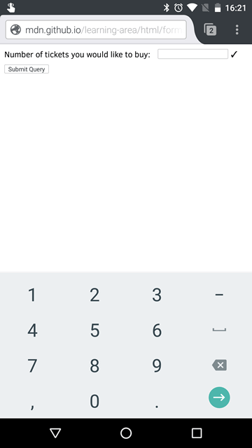

{{HTMLElement("input")}} elements of type number are used to let the user enter a number. They include built-in validation to reject non-numerical entries. The browser may opt to provide stepper arrows to let the user increase and decrease the value using their mouse or by tapping with a fingertip.
On browsers that don't support inputs of type number, a number input falls back to type text.
| {{anch("Value")}} | A {{jsxref("Number")}} representing a number, or empty |
| Events | {{domxref("HTMLElement/change_event", "change")}} and {{domxref("HTMLElement/input_event", "input")}} |
| Supported common attributes | {{htmlattrxref("autocomplete", "input")}}, {{htmlattrxref("list", "input")}}, {{htmlattrxref("placeholder", "input")}}, {{htmlattrxref("readonly", "input")}} |
| IDL attributes | list, value, valueAsNumber |
| Methods | {{domxref("HTMLInputElement.select", "select()")}}, {{domxref("HTMLInputElement.stepUp", "stepUp()")}}, {{domxref("HTMLInputElement.stepDown", "stepDown()")}} |
A {{jsxref("Number")}} representing the value of the number entered into the input. You can set a default value for the input by including a number inside the {{htmlattrxref("value", "input")}} attribute, like so:
<input id="number" type="number" value="42">
{{EmbedLiveSample('Value', 600, 40)}}
In addition to the attributes commonly supported by all {{HTMLElement("input")}} types, inputs of type number support these attributes:
| Attribute | Description |
|---|---|
{{anch("list")}} |
The id of the {{HTMLElement("datalist")}} element that contains the optional pre-defined autocomplete options |
{{anch("max")}} |
The maximum value to accept for this input |
{{anch("min")}} |
The minimum value to accept for this input |
{{anch("placeholder")}} |
An example value to display inside the field when it's empty |
{{anch("readonly")}} |
A Boolean attribute indicating whether the value is read-only |
{{anch("step")}} |
A stepping interval to use when using up and down arrows to adjust the value, as well as for validation |
{{page("/en-US/docs/Web/HTML/Element/input/text", "attr-list", 0, 1, 2)}}
maxThe maximum value to accept for this input. If the {{htmlattrxref("value", "input")}} entered into the element exceeds this, the element fails constraint validation. If the value of the max attribute isn't a number, then the element has no maximum value.
This value must be greater than or equal to the value of the min attribute.
minThe minimum value to accept for this input. If the {{htmlattrxref("value", "input")}} of the element is less than this, the element fails constraint validation. If a value is specified for min that isn't a valid number, the input has no minimum value.
This value must be less than or equal to the value of the max attribute.
{{page("/en-US/docs/Web/HTML/Element/input/text", "attr-placeholder", 0, 1, 2)}}
{{page("/en-US/docs/Web/HTML/Element/input/text", "attr-readonly", 0, 1, 2)}}
stepThe step attribute is a number that specifies the granularity that the value must adhere to, or the special value any, which is described below. Only values which are equal to the basis for stepping ({{anch("min")}} if specified, {{htmlattrxref("value", "input")}} otherwise, and an appropriate default value if neither of those is provided) are valid.
A string value of any means that no stepping is implied, and any value is allowed (barring other constraints, such as {{anch("min")}} and {{anch("max")}}).
Note: When the data entered by the user doesn't adhere to the stepping configuration, the {{Glossary("user agent")}} may round to the nearest valid value, preferring numbers in the positive direction when there are two equally close options.
The default stepping value for number inputs is 1, allowing only integers to be entered—unless the stepping base is not an integer.
<input type="number"> elements can help simplify your work when building the user interface and logic for entering numbers into a form. When you create a number input with the proper type value, number, you get automatic validation that the entered text is a number, and usually a set of up and down buttons to step the value up and down.
Important: Bear in mind that, logically, you should not be able to enter characters inside a number input other than numbers. There seems to be some disagreement about this among browsers; see {{bug(1398528)}}.
Note: It's crucial to remember that a user can tinker with your HTML behind the scenes, so your site must not use simple client-side validation for any security purposes. You must verify on the server side any transaction in which the provided value may have security implications of any kind.
Mobile browsers further help with the user experience by showing a special keyboard more suited for entering numbers when the user tries to enter a value. The following screenshot is taken from Firefox for Android:

In its most basic form, a number input can be implemented like this:
<label for="ticketNum">Number of tickets you would like to buy:</label> <input id="ticketNum" type="number" name="ticketNum" value="0">
{{EmbedLiveSample('A_simple_number_input', 600, 40)}}
A number input is considered valid when empty and when a single number is entered, but is otherwise invalid. If the {{htmlattrxref("required", "input")}} attribute is used, the input is no longer considered valid when empty.
Note: Any number is an acceptable value, as long as it is a valid floating point number (that is, not NaN or Infinity).
Sometimes it's helpful to offer an in-context hint as to what form the input data should take. This can be especially important if the page design doesn't offer descriptive labels for each {{HTMLElement("input")}}. This is where placeholders come in. A placeholder is a value most commonly used to provide a hint as to the format the input should take value. It is displayed inside the edit box when the element's value is "". Once data is entered into the box, the placeholder disappears; if the box is emptied, the placeholder reappears.
Here, we have an number input with the placeholder "Multiple of 10". Note how the placeholder disappears and reappears as you manipulate the contents of the edit field.
<input type="number" placeholder="Multiple of 10">
{{EmbedLiveSample('Placeholders', 600, 40)}}
By default, the up and down buttons provided for you to step the number up and down will step the value up and down by 1. You can change this by providing a {{htmlattrxref("step", "input")}} attribute, which takes as its value a number specifying the step amount. Our above example contains a placeholder saying that the value should be a multiple of 10, so it makes sense to add a step value of 10:
<input type="number" placeholder="multiple of 10" step="10">
{{EmbedLiveSample('Controlling_step_size', 600, 40)}}
In this example, you should find that the up and down step arrows will increase and decrease the value by 10 each time, not 1. You can still manually enter a number that's not a multiple of 10, but it will be considered invalid.
You can use the {{htmlattrxref("min", "input")}} and {{htmlattrxref("max", "input")}} attributes to specify a minimum and maximum value that the field can have. For example, let's give our example a minimum of 0, and a maximum of 100:
<input type="number" placeholder="multiple of 10" step="10" min="0" max="100">
{{EmbedLiveSample('Specifying_minimum_and_maximum_values', 600, 40)}}
In this updated version, you should find that the up and down step buttons will not allow you to go below 0 or above 100. You can still manually enter a number outside these bounds, but it will be considered invalid.
One issue with number inputs is that their step size is 1 by default. If you try to enter a number with a decimal (such as "1.0"), it will be considered invalid. If you want to enter a value that requires decimals, you'll need to reflect this in the step value (e.g. step="0.01" to allow decimals to two decimal places). Here's a simple example:
<input type="number" placeholder="1.0" step="0.01" min="0" max="10">
{{EmbedLiveSample("Allowing_decimal_values", 600, 40)}}
See that this example allows any value between 0.0 and 10.0, with decimals to two places. For example, "9.52" is valid, but "9.521" is not.
{{HTMLElement("input")}} elements of type number don't support form sizing attributes such as {{htmlattrxref("size", "input")}}. You'll have to resort to CSS to change the size of these controls.
For example, to adjust the width of the input to be only as wide as is needed to enter a three-digit number, we can change our HTML to include an {{htmlattrxref("id")}} and to shorten our placeholder since the field will be too narrow for the text we have been using so far:
<input type="number" placeholder="x10" step="10" min="0" max="100" id="number">
Then we add some CSS to narrow the width of the element with the id selector #number:
#number {
width: 3em;
}
The result looks like this:
{{EmbedLiveSample('Controlling_input_size', 600, 40)}}
You can provide a list of default options from which the user can select by specifying the {{htmlattrxref("list", "input")}} attribute, which contains as its value the {{htmlattrxref("id")}} of a {{HTMLElement("datalist")}}, which in turn contains one {{HTMLElement("option")}} element per suggested value. Each option's value is the corresponding suggested value for the number entry box.
<input id="ticketNum" type="number" name="ticketNum" list="defaultNumbers"> <span class="validity"></span> <datalist id="defaultNumbers"> <option value="10045678"> <option value="103421"> <option value="11111111"> <option value="12345678"> <option value="12999922"> </datalist>
{{EmbedLiveSample("Offering_suggested_values", 600, 40)}}
We have already mentioned a number of validation features of number inputs, but let's review them now:
<input type="number"> elements automatically invalidate any entry that isn't a number (or empty, unless required is specified).The following example exhibits all of the above features, as well as using some CSS to display valid and invalid icons, depending on the input's value:
<form>
<div>
<label for="balloons">Number of balloons to order (multiples of 10):</label>
<input id="balloons" type="number" name="balloons" step="10" min="0" max="100" required>
<span class="validity"></span>
</div>
<div>
<input type="submit">
</div>
</form>
{{EmbedLiveSample("Validation", 600, 110)}}
Try submitting the form with different invalid values entered — e.g., no value; a value below 0 or above 100; a value that is not a multiple of 10; or a non-numerical value — and see how the error messages the browser gives you differ with different ones.
The CSS applied to this example is as follows:
div {
margin-bottom: 10px;
}
input:invalid+span:after {
content: '✖';
padding-left: 5px;
}
input:valid+span:after {
content: '✓';
padding-left: 5px;
}
Here we use the {{cssxref(":invalid")}} and {{cssxref(":valid")}} pseudo classes to display an appropriate invalid or valid icon as generated content on the adjacent {{htmlelement("span")}} element, as a visual indicator of validity.
We put it on a separate <span> element for added flexibility. Some browsers don't display generated content very effectively on some types of form inputs. (Read, for example, the section on <input type="date"> validation.)
Important: HTML form validation is not a substitute for server-side scripts that ensure that the entered data is in the proper format!
It's far too easy for someone to make adjustments to the HTML that allow them to bypass the validation, or to remove it entirely. It's also possible for someone to bypass your HTML and submit the data directly to your server.
If your server-side code fails to validate the data it receives, disaster could strike when improperly-formatted data is submitted (or data which is too large, is of the wrong type, and so forth).
<input type="number"> elements do not support use of the {{htmlattrxref("pattern", "input")}} attribute for making entered values conform to a specific regex pattern.
The rationale for this is that number inputs won't be valid if they contain anything except numbers, and you can constrain the minimum and maximum number of valid digits using the {{htmlattrxref("min", "input")}} and {{htmlattrxref("max", "input")}} attributes (as explained above).
We've already covered the fact that by default, the increment is 1, and you can use the {{htmlattrxref("step", "input")}} attribute to allow decimal inputs. Let's take a closer look.
In the following example is a form for entering the user's height. It defaults to accepting a height in meters, but you can click the relevant button to change the form to accept feet and inches instead. The input for the height in meters accepts decimals to two places.
{{EmbedLiveSample("Examples", 600, 150)}}
The HTML looks like this:
<form>
<div class="metersInputGroup">
<label for="meters">Enter your height — meters:</label>
<input id="meters" type="number" name="meters" step="0.01" min="0" placeholder="e.g. 1.78" required>
<span class="validity"></span>
</div>
<div class="feetInputGroup" style="display: none;">
<span>Enter your height — </span>
<label for="feet">feet:</label>
<input id="feet" type="number" name="feet" min="0" step="1">
<span class="validity"></span>
<label for="inches">inches:</label>
<input id="inches" type="number" name="inches" min="0" max="11" step="1">
<span class="validity"></span>
</div>
<div>
<input type="button" class="meters" value="Enter height in feet and inches">
</div>
<div>
<input type="submit" value="Submit form">
</div>
</form>
You'll see that we are using many of the attributes we've already looked at in the article earlier on. Since we want to accept a meter value in centimeters, we've set the step value to 0.01, so that values like 1.78 are not seen as invalid. We've also provided a placeholder for that input.
We've hidden the feet and inches inputs initially using style="display: none;", so that meters is the default entry type.
Now, onto the CSS. This looks very similar to the validation styling we saw before; nothing remarkable here.
div {
margin-bottom: 10px;
position: relative;
}
input[type="number"] {
width: 100px;
}
input + span {
padding-right: 30px;
}
input:invalid+span:after {
position: absolute;
content: '✖';
padding-left: 5px;
}
input:valid+span:after {
position: absolute;
content: '✓';
padding-left: 5px;
}
And finally, the JavaScript:
let metersInputGroup = document.querySelector('.metersInputGroup');
let feetInputGroup = document.querySelector('.feetInputGroup');
let metersInput = document.querySelector('#meters');
let feetInput = document.querySelector('#feet');
let inchesInput = document.querySelector('#inches');
let switchBtn = document.querySelector('input[type="button"]');
switchBtn.addEventListener('click', function() {
if(switchBtn.getAttribute('class') === 'meters') {
switchBtn.setAttribute('class', 'feet');
switchBtn.value = 'Enter height in meters';
metersInputGroup.style.display = 'none';
feetInputGroup.style.display = 'block';
feetInput.setAttribute('required', '');
inchesInput.setAttribute('required', '');
metersInput.removeAttribute('required');
metersInput.value = '';
} else {
switchBtn.setAttribute('class', 'meters');
switchBtn.value = 'Enter height in feet and inches';
metersInputGroup.style.display = 'block';
feetInputGroup.style.display = 'none';
feetInput.removeAttribute('required');
inchesInput.removeAttribute('required');
metersInput.setAttribute('required', '');
feetInput.value = '';
inchesInput.value = '';
}
});
After declaring a few variables, an event listener is added to the button to control the switching mechanism. This is pretty simple, mostly involving changing over the button's class and {{HTMLElement("label")}}, and updating the display values of the two sets of inputs when the button is pressed.
(Note that we're not converting back and forth between meters and feet/inches here, which a real-life web application would probably do.)
Note: When the user clicks the button, the required attribute(s) are removed from the input(s) we are hiding, and empty the value attribute(s). This is so the form can be submitted if both input sets aren't filled in. It also ensures that the form won't submit data that the user didn't mean to.
If you didn't do this, you'd have to fill in both feet/inches and meters to submit the form!
{{Specifications}}
{{Compat}}
<input type="tel">